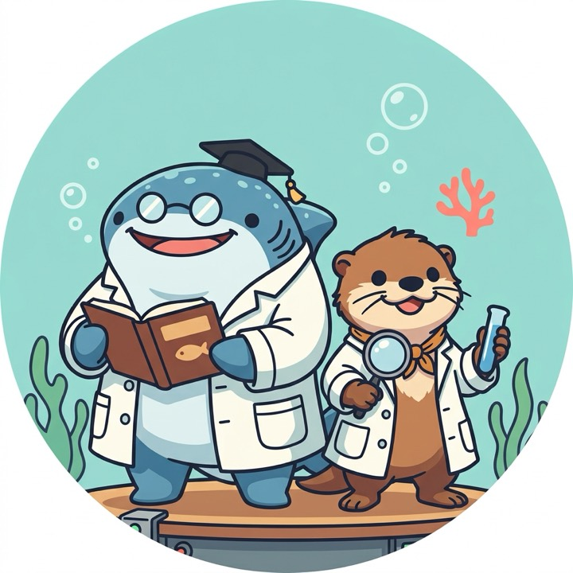

この作品のいちばんの工夫NO. 01
解説パネル
水槽の横にあるのに、多くの人が読まずに通り過ぎる板
- 01名前が書いてあるので、間違いが少ない泳ぐ魚の見た目から推測するより、パネルの文字を読むほうが確実です。
- 02撮るために、解説を読む習慣がつく「読んで」と促すのではなく、撮る動機で解説に目を向けてもらいます。
- 03知った魚を、本物の水槽で探すパネルで名前を知ってから水槽を見ると、通り過ぎていた魚が「探す対象」になります。
読み込み中…
LINE で遊ぶ、海遊館の生きもの図鑑
水槽の横の解説パネルを撮って LINE に送るだけ。Gemini が名前を読み取り、海遊館の243種から図鑑に登録します。カワウソ助教授とジンベエ名誉教授が、掛け合いでクイズや駅からの水族館探しを案内します。アプリのインストールは不要です。

水槽の横にあるのに、多くの人が読まずに通り過ぎる板


LINE 公式アカウント「博士と助教授のひみつ研究室」
Bot ID: @894sfbup
スマホの LINE で QR を読み取るか、ボタンから追加してください。PC の方は QR をスマホで読み取るのが確実です。
デモは見本のユーザーの図鑑を見るだけです（書き込みはできません）。自分の図鑑は LINE ログインが必要です。